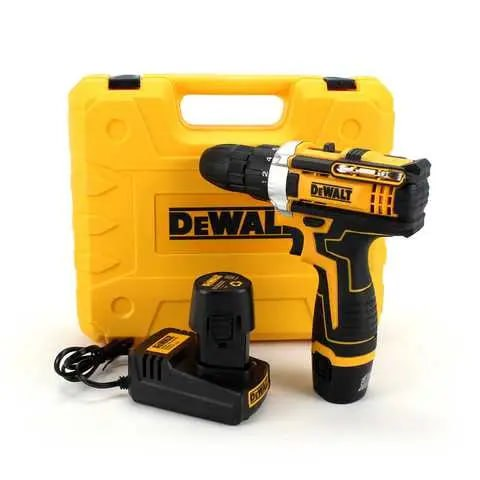

Yurost
Вхід|Реєстрація
Каталог
Yurost
>

Шуруповерт DeWALT DCF680G2F (12V, 2AH) із набором інструментів. Акумуляторний шуруповерт Деволт
1280 ₴
Купити
(Остап)
Купити
(Юрій)
Характеристика:
Потужність: - 12В
Число оборотів: - 0-400/1800 об/хв
Зусилля затягування (крутний момент), макс: - 32 Nm
Діаметр свердління - дерево - 50 мм, сталь -15 мм
Макс. діаметр хвостовика свердла, мм: 10 мм
Кількість позицій регулювання обертального моменту: - 25+3
Акумулятор (літій-іонний): - 12V/2.0 Ah
Час зарядки: - 1 година
Вага: - 0,95 кг
Розмір кейса - 35х30х10 (см)
Ударний режим: є
LED підсвічування: є
Індикатор акумулятора: - Немає